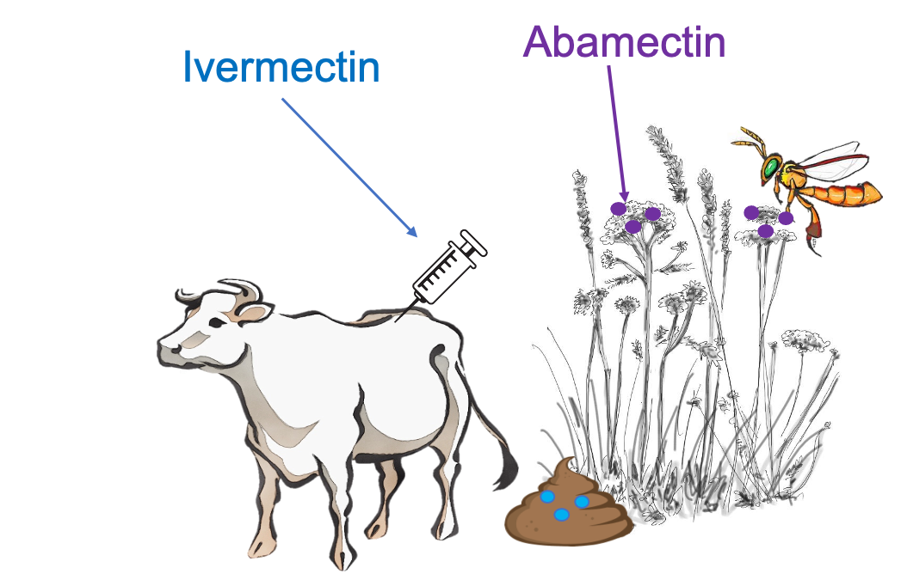
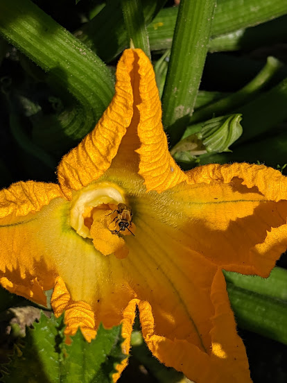
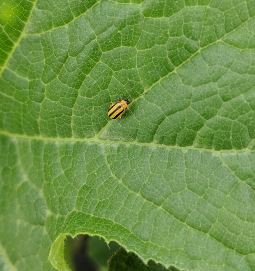
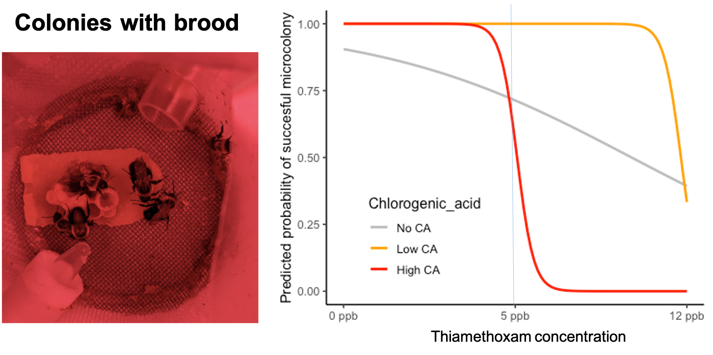

Ph.D. Research
Landscapes, pesticides, and bees
Land-use change and pesticides have been identified as two of the main causes behind pollinator decline. Understanding how these factors affect crop pollinator communities is crucial to inform practices that generate optimal pollination and ensure sustainable food production.
- Natural habitat partially mitigates negative pesticide effects on tropical pollinator communities
In this study, we investigated the effects of landscape composition and pesticide residues on bee communities and their pollination services in Solanum quitoense Lam. “lulo” crops in the Andean region of Colombia. We found that bee abundance and richness are reduced with the increased toxicity and concentration of pesticides found in flowers (Mainly imidacloprid) but these negative pesticide effects were less detrimental in farms with higher natural habitat proportions, suggesting a dilution effect.
Check out the published paper and the infographic in the outreach section.

Bombus transversalis in a Solanum quitoense flower
- Landscape simplification effects on Tetragonisca angustula nutrition and pesticide exposure
Tetragonisca angustula is the most common stingless bee species in Latin America. In Colombia, it is found below 2000m of altitude. Deforestation to transform natural ecosystems into grazing land areas and simplified agricultural landscapes are rapidly increasing in South America but there is scant information showing how this is affecting stingless bees. In this study, we evaluated if landscape simplification is impacting bee nutrition, body size, and pesticide exposure. We found that the increment of pasture area in the landscape significantly reduces the amount of Asteraceae pollen collected by T. angustula colonies, which generates a cascade effect, leading to a decrease in trehalose concentration in the food, which is an important disaccharide in the insect’s hemolymph and the main energy source for flying, and consequently reducing bee body size. Also, more pasture area is correlated with higher concentrations of avermectins, which are insecticides used to treat the cattle against parasites such as ticks and flies.
Paper in progress
Natural nest entrance of Tetragonisca angustula
- Non-target exposure of avermectins to bees in livestock dominated landscapes
Pastures for cattle ranching are currently the main cover type in the Andes, representing the biggest driver of biodiversity loss in this highly diverse region. Associated with these livestock systems, there is an extensive use of pesticides for the control of endo and ectoparasites in cattle. However, there is no information about the exposure routes and potential risks of pesticides for bees in cattle ranching systems. In previous work in Colombia, we found residues of abamectin (Molecule in the avermectin group) in 50% of pollen samples collected from Tetragonisca angustula colonies. We also found a positive correlation between pasture areas in the colonies’ surroundings and the concentration of abamectin in the bee food. For this follow-up project, we designed an experiment in which we found that the abamectin found in bee colonies can be a product of the pollen collection on flowers contaminated with feces from treated cattle with avermectins (Ivermectin in particular).
Work in progress

Pest management practices and pesticide exposure
Crop pollination benefits are often enhanced under effective pest control but the use of pesticides to avoid herbivore damage has shown detrimental effects on pollinators, reducing the final outcome of the crops in the short or long term. This dilemma requires research in greater detail on the efficiency of pest management practices and their effect on pollinators.
- The pest control and pollinator protection dilemma: The case of thiamethoxam applications in squash crops
Squash crops are entirely dependent on bee pollination to produce fruits. The most common bee species pollinating cucurbits in eastern North America are Apis mellifera, Bombus impatiens, and the solitary ground nesting bee Eucera (Peponapis) pruinosa. On the other hand, the striped cucumber beetle Acalymma vittatum (F.) (Coleoptera: Chrysomelidae) is the major insect pest of squash crops in the northeastern and midwestern United States and eastern Canada. Adult beetles feed on cotyledons, foliage, flowers, and fruits, and larvae feed exclusively on roots. Early season damage and the transmission of bacterial wilt (Erwinia tracheiphila) are the biggest concerns associated with this pest. Neonicotinoids are commonly applied to avoid pest damage as prophylactic measures at planting through seed treatments or soil drenches, as well as early foliar applications to provide a 2-3 week protection window. Neonicotinoids residues have been previously found in pollen, nectar, and soil of Cucurbita crops, representing a risk of exposure for bees but these residues have not been evaluated in relation to the different application methods and the pest control efficiency, with the goal of providing comprehensive recommendations to growers. The aim of this study was to evaluate how different prophylactic application methods (seed treatments, in-furrow applications, and early foliar sprays) of commercially available thiamethoxam products impact pest control, bee visitation, yield, and pesticides residues in foliage, pollen, and nectar of squash crops with the purpose of elucidating if there are uses of this insecticide that provides an efficient pest control solution for squash crops while minimizing pesticide pollinator exposure. Among the different thiamethoxam application methods, in-furrow application was the treatment that prevented defoliation the most and produced the highest fruit weight and fruit number. However, it also produced the most frequent and highest thiamethoxam concentrations in nectar and pollen, reaching lethal hazards for the bees. Our study provides evidence that under the current application methods thiamethoxam does not provide a sustainable solution for squash growers and further research in more efficient pesticide delivery methods are required as well as alternative non-pesticide pest control measurements.
Paper in progress
 
Pesticides and plant secondary metabolites
Plants produce an array of secondary metabolites to deter herbivores, and while nectar and pollen usually contain lower concentrations, pollinators are also exposed to these compounds. There is evidence that phytochemicals present in pollen and nectar, such as coumaric acid or nicotine can up-regulate detoxification genes (P450s), which are also involved in the ability of insects to cope with pesticides. However, it has not been shown directly if bees exposed to certain secondary metabolites have an improved detoxification system against pesticides.
- Interactive effects of a floral secondary metabolite (chlorogenic acid) and thiamethoxam on bumble bee microcolonies
Bumble bees are important crop pollinators worldwide. However, when bees are foraging in agricultural environments, they can encounter a wide range of pesticides that can affect their survival and development. Neonicotinoids are systemic insecticides, well known for their pest control efficiency but also for being highly toxic to bees. Thiamethoxam is the second most used neonicotinoid, and it has already shown that bees can be exposed to sublethal concentrations of this insecticide when visiting crops.
Flowers provide sugar and protein-based rewards for pollinators, but they also commonly contain secondary metabolites that function as deterrents or antibiotics. Moreover, early biochemical evidence in honey bees suggests that plant secondary metabolites can help bees to detoxify certain pesticide molecules increasing survival. In our study, we tested if different concentrations of chlorogenic acid, a common polyphenol produced in nectar and pollen of many crop plants, interacted with different sublethal concentrations of thiamethoxam in bumble bee colony development. We found that the probability to have a successful bumble bee microcolony with brood when simultaneously exposed to chlorogenic acid and thiamethoxam is dose-dependent.
Paper in progress

Master Research
Melissopalynology
- Floral Preference of Melipona eburnea Friese (Hymenoptera: Apidae) in a Colombian Andean Region
Diana Obregon & Guiomar Nates Parra
Melipona eburnea Friese is a stingless bee kept in some regions of Colombia, where it is reported to be vulnerable to extinction due to habitat disturbance. To contribute to raising conservation strategies, the aim of this study was to identify the floral preferences of this species using melissopalynological analysis. A total of 31 pollen pot samples and 37 honey samples were taken from March 2009 through March 2010 from four colonies in Fusagasuga, Colombia. We found 92 pollen types: 17 from pollen pot samples, 39 from honey samples (indicating the sources of nectar), and 36 in both types of samples. The most frequent pollen types in the pollen pot samples were Myrcia type (100%), Eucalyptus globulus (96.9%), and Fraxinus uhdei (96.9%). The most frequent pollen types in honey samples were E. globulus (97.4%) and Myrcia type (94.9%). The pollen types corresponded mainly to native plants (68%), trees (44.5%), plants whose sexual system is hermaphroditic (56.5%), and plants with inflorescences (76.2%). The most frequent shapes of the flowers were brush-like (type Myrtaceae) and dish-like (type Asteraceae), and the preferred flower colors were white or cream (52.2%). In general, we found that M. eburnea showed a strong preference for trees of the family Myrtaceae to obtain nectar and pollen, including native and introduced species. Some other families are contributing significantly, such as Melastomataceae for pollen collection and Asteraceae for nectar. These results highlight the key plant species for the diet of M. eburnea.
Common pollen types collected by Melipona eburnea
- Botanical Origin of Pot-Honey from Tetragonisca angustula Latreille in Colombia
Diana Obregón, Ángela Rodríguez -Fermín J. Chamorro, & Guiomar Nates-Parra
We identified the plants providing nectar resources to Tetragonisca angustula using melissopalynological analysis of 76 honey samples from eight states in Colombia. A total of 306 pollen types belonging to 49 families were identified. According to pollen frequency classes 40 monofloral, 13 bifloral, and 23 multifloral honeys were found. Representative plants of the coffee agroecosystem (Coffea arabica and native plants such as Gouiana polygama and Heliocarpus americanus) were the main nectar sources for monofloral and bifloral honey. These results may improve meliponiculture performance in Colombia because stingless bee beekeepers can implement management practices aiming botanical differentiation of the honeys.
Check out the published chapter
Other research projects
- Animal pollination contribution to crop yield and quality – A systematic review
Review team: Kass Urban-Mead, Heather Grab, Julie Davis, Kaitlin Deutsch, Laura Figueroa, Grace Pederson, & Diana Obregon
Animal pollination is a key ecosystem service for the reproduction of many crops worldwide. Based on the floral biology and the pollination strategy, crops vary in their dependence on pollinators. The magnitude of animal pollinator dependence is usually measured in field experiments where pollinators are allowed to access the crop flowers in contrast to exclusion treatments, and increments in fruit set, seed set or quality aspects of those treatments are considered the benefits provided by pollinators. Klein et al., 2006 compiled data on pollinator dependence for 124 leading crops (57 single and 67 commodity crops with an annual production of at least 4 000 000 Metric tonnes (Mt) in 2004 according to FAO). In this review, they found production increases due to animal pollination in 39 out of 57 single crops, and 48 out of 67 commodity crops. However, they found little or inadequate information for many crops, especially taking into account differences in crop varieties. Additionally, their results do not separate increases in yield from increases in crop quality.
Our systematic review aims to collect and update evidence about the benefits in yield and quality that pollinators contribute to crops, including all the new scientific evidence produced since 2006. We want to make particular emphasis on all aspects of harvest quality in which pollinators can have a positive effect such as fruit weight, fruit symmetry, sugar content, shelf life, and commercial value. The results of this review may be essential for the assessment and protection of pollinators, which are currently threatened by pests and diseases, use of pesticides, loss of natural habitat and climate change.
Work in progress
- Agrochemical pesticide production, trade, and hazard: Narrowing the information gap in Colombia
Diego Valbuena, Marcela Cely-Santos, & Diana Obregón
Pesticides are a major tool for the intensification of agriculture, and helped to increase food, feed and biofuel production. Yet, there are persistent concerns about the negative effects of pesticides in human health and the environment, particularly in low and middle income countries (LMICs). Given the lack of information on pesticide exposure and hazard, Colombia exemplifies the need to narrow the information gap on pesticide risk in LMICs. We assessed pesticide hazard in Colombia based on the official toxicity categorization, compared it to more integral international standards, and identified main actions to narrow this information gap. Results showed that Colombia has been a relevant regional actor in pesticide production and trade, reaching almost 75 million kilogrammes and liters sold in 2016. Based on acute toxicity for humans, a quarter of the amount of pesticides sales and imports, and a third of the exports in 2016 ranged from moderately to extremenly toxic. The top-selling agrochemicals in 2016 (glyphosate with 14% of the total sales, chlorpyrifos 7.5% and mancozeb 6.9%) are also commonly used in other countries, reflecting a homogenized global industry. Compared to integral international categorizations, we found that for that year 63% of the pesticides sold with slightly acute toxicity are actually considered highly hazardous pesticides (HHP) for humans or the environment, evidencing the need to use a more integral hazard categorization in the country. Narrowing the information gap in pesticide use and associated risks demands a transparent process of knowledge creation and sharing, including funtional information and monitoring systems. This should be part of an integral assessment and regulation that better defines HHP, their production and trade to reduce pesticide risk while informing a transition towards sustainable food systems.
Check out the published paper and the infographic in the outreach section.
Comparison between the ICA (acute) toxic categories and PAN-HHP including: a. Number of currently registered pesticide products whose active ingredient was considered a HHP and hazard group by the PAN per: a. ICA toxicity category; and b. Main use. Dots and second y-axis represented the % of these HHP in the sales for each individual toxicity category and main use in 2016. Data source: ICA and PAN
- Effect of climatic factors, plant varieties, and planting densities on arthropod dynamics in rice crops in Yopal-Casanare, Colombia
Diana Obregon, Francisco Javier Hernandez, & Diana Katherine Rios
The diversity and population dynamics of arthropods present in rice crops under dry and irrigated planting systems were evaluated, with two rice varieties (Fedearroz 174 and Fedearroz 733), and in three planting densities (60, 100, and 180 kg/ha) in relation to different climatic variables. For specimen collection, 10 double entomological net passes were performed every eight days from emergence to the start of the maturation phase. The morphotypes found were identified and grouped according to their type of interaction with the crop in sap-suckers, chewers, predators, and parasitoids. The most relevant climatic variables were selected with a Random Forest analysis. 126 morphotypes were identified in 12 orders. The greatest richness was found in Hemiptera, Coleoptera and Diptera, as well as in the group of suckers. No differences were found in the abundance or richness of arthropods between varieties or planting densities. The irrigation system presented a greater total abundance of arthropods compared to the rainfed system, but in this system, there was higher species richness. Parasitoid and predator populations were negatively correlated with chewers but there was no effect on sap-suckers. Temperature and relative humidity were the most relevant climatic variables in arthropod dynamics. These results contribute to develop pest monitoring and management systems that take into account the dynamics of interaction between ecological groups and the effect of local climate.
Check out the published paper (Full text in Spanish)
Tagososdes orizicolus, main pest in rice crops in Colombia. Evidence of ectoparasitism in its abdomen (area circled in red)